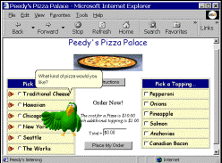

|
| ||
|
| ||
Microsoft Corporation
April 6, 1999
 Download this document in Microsoft Word (.DOC) format (zipped, 176K).
Download this document in Microsoft Word (.DOC) format (zipped, 176K).
|
Microsoft Agent version 2.0 provides unprecedented technology to create innovative, new conversational interfaces for applications and Web pages. It provides powerful animation capability, interactivity, and versatility, with incredible ease of development. |
Microsoft Agent is a technology that provides a foundation for more natural ways for people to communicate with their computers. It is a set of software services that enable developers to incorporate interactive animated characters into their applications and Web pages. These characters can speak, via a text-to-speech engine or recorded audio, and even accept spoken voice commands. Microsoft Agent empowers developers to extend the user interface beyond the conventional mouse and keyboard interactions prevalent today. Enhancing applications and Web pages with a visible interactive personality will both broaden and humanize the interaction between users and their computers. There are a limitless number of roles and functions that developers can create for these personalities to perform.
|
||||||||||||||||
|
 |
Develop with what you already knowMicrosoft Agent is not only versatile in terms of its potential uses, it is also versatile in how it can be implemented. Developers can choose from a wide range of language tools that support ActiveX technologies like the Microsoft Visual Basic and Visual C++ development systems, and many others. Web authors can quickly incorporate Microsoft Agent onto their pages with HTML scripting languages like Visual Basic Scripting Edition (VBScript) and JScript development software. Solution builders can integrate Microsoft Agent with Microsoft Office and other applications that support Visual Basic for Applications (VBA). Whichever language or development environment you prefer, programming the Microsoft Agent characters is quick and easy. And Microsoft Agent won't burden your budget either. It is available for download free from the Internet (connect charges may apply) and you can build as many applications as you want with it, all royalty-free. The richer, interactive experience that Microsoft Agent enables is just one of the ways that Microsoft is working to simplify and improve computing for everyone. Join the growing number of developers and Web site builders already using Microsoft Agent today. |
||||||||||||||||
|
To use/run Microsoft
Recommended:
|
Key Features of Microsoft Agent
For more information: Microsoft Agent, documentation, tools and examples are available for download on the World Wide Web in the Microsoft Agent Forum at http://www.microsoft.com/msagent/. You can connect and communicate with other Microsoft Agent developers at the Microsoft Agent Internet newsgroup: news:microsoft.public.msagent. To order other Microsoft Internet platform and developer tools products, or to receive a reseller referral, in the United States or Canada, call (800) 621-7930. Outside the United States and Canada, please contact your local Microsoft subsidiary. This data sheet is for informational purposes only. MICROSOFT MAKES NO WARRANTIES, EXPRESS OR IMPLIED, IN THIS SUMMARY. Microsoft, ActiveX, JScript, Visual Basic, Visual C++, Windows, the Windows logo, and Windows NT are either registered trademarks or trademarks of Microsoft Corporation in the United States and/or other countries. Other product and company names mentioned herein may be the trademarks of their respective owners. The example companies, organizations, products, people and events depicted herein are fictitious. No association with any real company, organization, product, person or event is intended or should be inferred. Microsoft Corporation * One Microsoft Way * Redmond, WA 98052-6399 * USA
Version 2.0 |
||||||||||||||||
Did you find this material useful? Gripes? Compliments? Suggestions for other articles? Write us!
© 1999 Microsoft Corporation. All rights reserved. Terms of use.